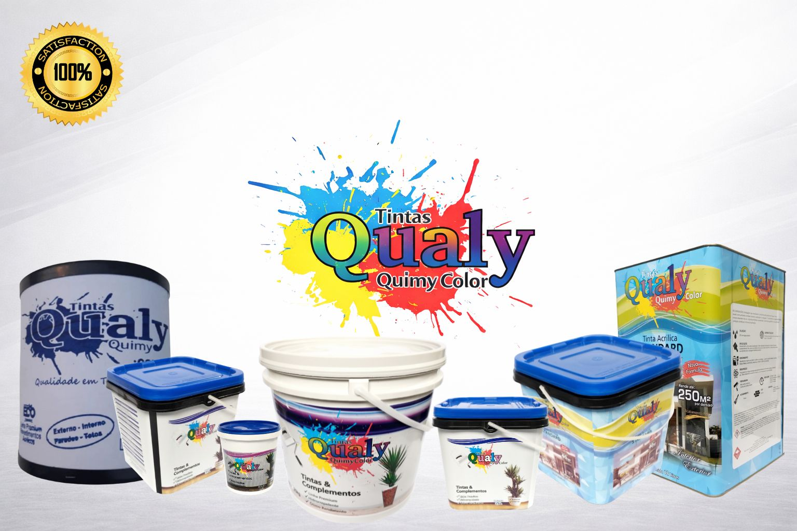

Nossos Produtos
- ➤ Tinta Acrílica
- ➤ Tinta Standard
- ➤ Tinta Premium
- ➤ Tinta Emborrachada
- ➤ Massa PVA
- ➤ Massa Acrílica
- ➤ Textura Lisa
- ➤ Grafiato
- ➤ Projetada
- ➤ Granline
- ➤ Seladora
- ➤ Massa Niveladora
E muito mais. Venha conferir nossos produtos de qualidade direto da fábrica.
